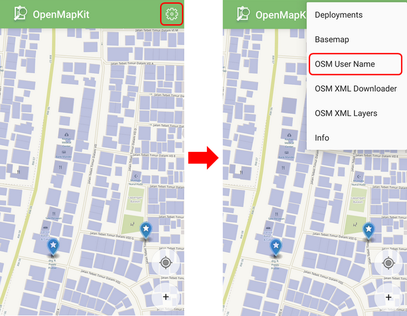
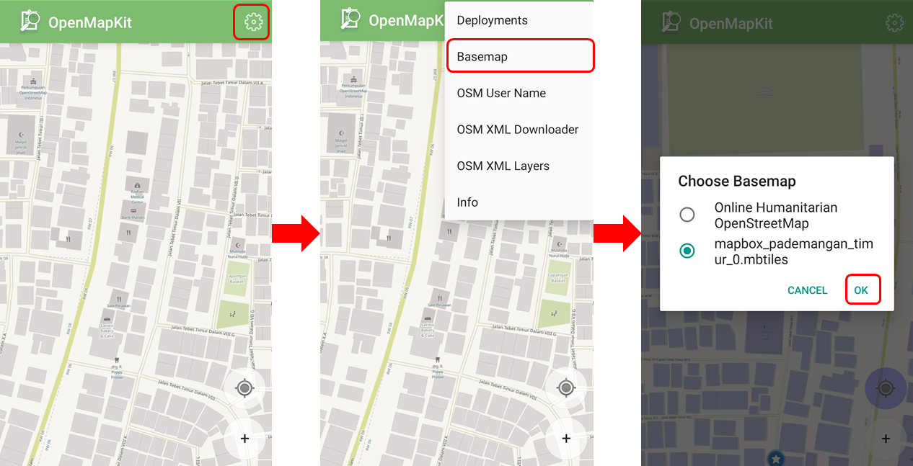
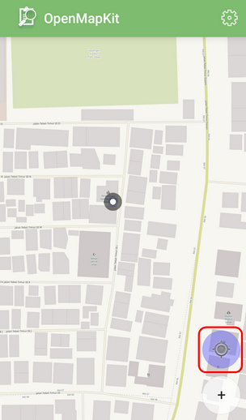
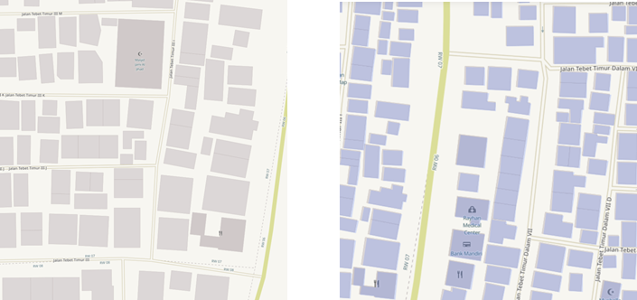
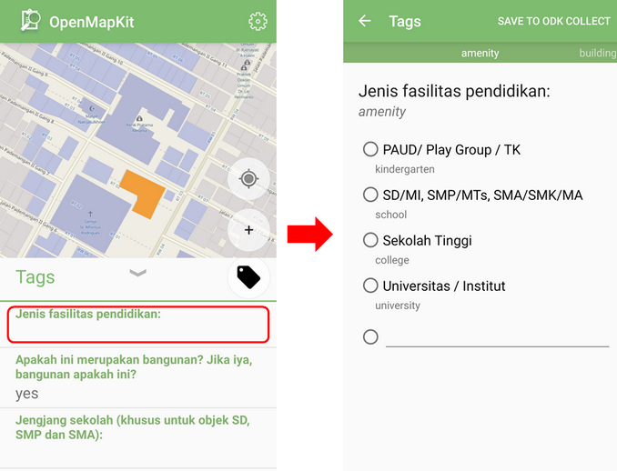
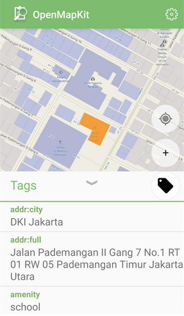
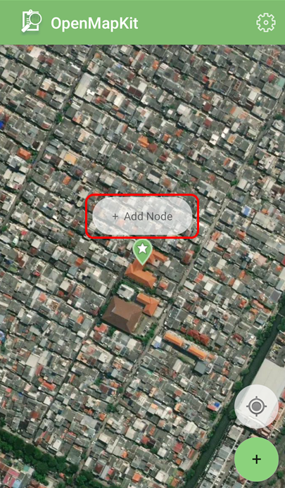
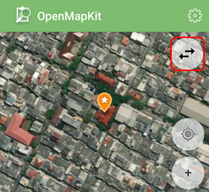

Menggunakan Aplikasi OpenMapKit
Download page as PDFTujuan Pembelajaran:
- Mampu menjelaskan OpenMapkit sebagai salah satu alat mengambil data infrastruktur
- Mampu mengoperasikan cara pengaturan awal untuk aplikasi OpenMapKit
- Mampu mengoperasikan cara memasukkan offline basemap untuk OpenMapKit
- Mampu menerapkan cara penggunaan OpenMapKit
Sebelumnya Anda sudah mempelajari aplikasi ODK (OpenDataKit) Collect, sebuah aplikasi berbasis android pengganti formulir kertas untuk survei. ODK Collect memiliki ekstensi tambahan yang dinamakan OpenMapKit (OMK). Ekstensi tambahan ini digunakan untuk menambahkan informasi posisi atau letak objek yang disurvei.
I. Apa itu OpenMapKit
OpenMapKit (OMK) adalah sebuah aplikasi tambahan yang digunakan untuk melengkapi aplikasi ODK Collect dalam menentukan posisi objek yang ditemukan saat survei lapangan secara tepat dan presisi. OpenMapKit dapat dijalankan melalui aplikasi ODK Collect, setelah Anda membuka dan memilih salah satu formulir yang tersedia. Dalam menentukan lokasi objek, aplikasi OpenMapKit membutuhkan latar belakang peta berupa citra satelit atau peta OSM. Jika Anda menggunakan peta OSM, maka hal yang harus diperhatikan adalah data tersebut harus tersedia di dalam server OSM. Saat ini OpenMapKit hanya tersedia di smartphone android. Anda dapat men-download OpenMapKit secara gratis melalui Play Store.
Aplikasi OpenMapKit di Play Store
Catatan : Untuk dapat menggunakan OpenMapKit Anda harus menginstal juga ODK (OpenDataKit) Collect versi terbaru, karena formulir yang diisi di dalam OpenMapKit bersumber dari ODK Collect.
II. Pengaturan awal OpenMapKit
Sebelum OpenMapKit digunakan, pertama-tama Anda harus melakukan pengaturan awal terlebih dahulu. Berikut ini adalah langkah-langkah pengaturan awal OpenMapKit:
- Pada halaman awal OpenMapKit, tekan tombol pengaturan yang terletak di pojok kanan atas.
- Pilih OSM User Name lalu masukkan OSM User Name Anda

Tampilan menu pengaturan OpenMapKit
- Untuk basemap atau peta dasar yang menjadi latar belakang, OpenMapKit secara default akan menampilkan Online Humanitarian OpenStreetMap.
III. Memasukkan offline basemap untuk OpenMapKit
OpenMapKit menyediakan peta OSM sebagai basemap yang harus diakses menggunakan koneksi internet. Namun jangan khawatir, Anda juga dapat memasukkan offline basemap ke dalam OpenMapKit yang merupakan peta dasar yang dapat dibuka tanpa koneksi internet. Offline basemap dapat memudahkan Anda dalam menambahkan informasi tepat di lokasi yang Anda survei. Berikut ini adalah cara menambahkan offline basemap:
- Format data yang digunakan sebagai offline basemap dalam aplikasi OpenMapKit harus berformat .mbtiles. Cara pembuatan .mbtiles dapat dilihat pada modul Membuat Mbtiles untuk OMK (OpenMapKit). Setelah Anda memiliki file .mbtiles, sambungkan smartphone Anda ke komputer/laptop. Buka folder yang berisi file .mbtiles yang akan dimasukkan. Pilih file .mbtiles nya kemudian salin ke folder openmapkit → mbtiles yang ada di internal storage smartphone Anda.

Proses menambahkan file .mbtiles ke dalam OpenMapKit
- Jika sudah berhasil memasukkan .mbtiles, Anda dapat mengubah basemap OpenMapKit dengan cara tekan tombol pengaturan yang terletak di pojok kanan atas dan tekan Basemap kemudian pilih .mbtiles yang baru saja Anda masukkan. Lalu tekan OK.

Tampilan pengaturan basemap di OpenMapKit
IV. Pengoperasian Dasar OpenMapKit
a. Men-download Data OSM di OpenMapKit
Data OSM yang sudah ada dapat memudahkan Anda untuk menambahkan informasi bangunan karena Anda dapat memilih langsung bangunan yang akan Anda tambahkan informasinya. Oleh karena itu, sebaiknya Anda men-download data OSM terlebih dahulu sebelum menambahkan informasi. Langkah-langkah untuk men-download data OSM di dalam aplikasi OpenMapKit, yaitu:
- Arahkan peta ke lokasi Anda berada saat ini (misalnya Anda sudah berada di lokasi survei) dengan cara tekan tombol bulat yang ada di pojok kanan bawah layar hingga tombol bulat berwarna biru. Sebuah titik hitam akan muncul di lokasi Anda berada saat ini.

Mengarahkan ke lokasi saat ini pada OpenMapKit
- Tekan tombol pengaturan yang ada di pojok kanan atas
- Pilih OSM XML Downloader untuk men-download data OSM sesuai dengan tampilan di layar smartphone Anda (lama tidaknya waktu download bergantung pada besar kecilnya area). Pastikan Anda tersambung dengan koneksi internet saat men-download data OSM. Perhatikan warna bangunan, bangunan pada basemap OSM berwarna cokelat dan bangunan hasil download berwarna ungu.

Warna bangunan pada basemap OSM (kiri) dan Warna bangunan hasil download (kanan)
- Data OSM yang baru saja di-download akan tersimpan dalam format .osm yang dapat diaktifkan atau dinonaktifkan melalui tombol pengaturan → OSM XML Layer.

Pengaturan OSM XML Downloader dan OSM XML Layers
b. Menambahkan informasi bangunan di OpenMapKit
Jika sudah berhasil men-download data bangunan dari OSM, Anda dapat menambahkan informasi bangunan tersebut dengan cara:
- Pilih pada bangunan yang akan ditambahkan informasinya. Pastikan bangunannya berwarna ungu yang menandakan bangunan tersebut sudah di-download dari OSM. Jika bangunan terpilih, warnanya akan berubah menjadi oranye.
- Anda dapat mengisi informasi bangunan tersebut sesuai dengan formulir yang sudah Anda pilih sebelumnya di aplikasi ODK Collect, dengan cara tekan pada informasi tag pada baris pertama yang terletak di bawah.

Mengisi informasi bangunan menggunakan formulir dari ODK Collect
- Setelah selesai, di akhir halaman pilih Save untuk menyimpan isian formulir ke dalam ODK Collect. Jika sudah selesai mengisikan formulir, bangunan yang Anda isikan informasinya akan terlihat seperti ini:

Tampilan bangunan yang sudah diisikan informasinya
Jika lokasi survei Anda masih belum tersedia data bangunannya di dalam OSM, Anda dapat memetakan bangunan terlebih dahulu sebelum melakukan survei. Jika tidak ada waktu untuk melakukan pemetaan bangunan, Anda dapat menggunakan titik untuk menandakan objek di aplikasi OpenMapKit dengan cara:
- Gunakan .mbtiles yang sudah Anda masukkan sebelumnya untuk membantu menandai objek secara akurat dengan cara tekan tombol pengaturan → Basemap
- Tekan ikon plus (+) yang ada di pojok kanan bawah layar Anda hingga berubah warna menjadi hijau. Akan muncul marker atau penanda warna hijau dengan tulisan Add Node di atasnya. Geser peta hingga lokasi penanda akurat dengan objek yang disurvei.

Menambahkan penanda menggunakan ikon plus (+)
- Tekan Add Node jika titik sudah akurat

Tombol add node saat menambahkan titik
- Jika titik yang Anda tambahkan ternyata posisinya kurang sesuai dengan objek yang ada di lapangan, Anda dapat menggeser titik yang sudah tambahkan dengan cara klik titik yang akan digeser kemudian tekan ikon dua panah di pojok kanan atas. Warna titik akan berubah menjadi oranye dan di atasnya terdapat tulisan Place Node.

Menggeser titik yang sudah ditambahkan
- Geser peta hingga posisi titik akurat, kemudian tekan Place Node.

Tombol place node saat menggeser titik
- Setelah posisi titik sudah akurat dan sama dengan objek yang ada di lapangan, Anda dapat melakukan pengisian formulir sama seperti langkah sebelumnya.
- Masukkan informasi yang sesuai dengan kondisi di lapangan. Geser layar ke kanan atau ke kiri untuk mengganti halaman pertanyaan pada formulir.
- Di akhir halaman, pilih Save untuk menyimpan isian formulir ke dalam ODK Collect. Jika sudah selesai mengisikan formulir, titik objek yang Anda isikan informasinya akan terlihat seperti ini:
Tampilan titik objek yang sudah diisikan informasinya
- Anda dapat melihat formulir yang sudah berhasil disimpan pada ODK Collect, yang dapat Anda pelajari di modul Menggunakan Aplikasi ODK Collect.
RINGKASAN
Jika Anda dapat mengikuti dan memperhatikan seluruh tahapan dalam bab ini, maka Anda telah berhasil memahami OpenMapKit sebagai salah satu alat survei lapang untuk mengambil data infrastruktur. Selain itu, Anda juga telah berhasil menerapkan pengoperasian cara pengaturan awal OpenMapKit, cara memasukkan offline basemap untuk OpenMapKit dan cara penggunaan OpenMapKit untuk mengambil data infrastruktur. Formulir yang sudah Anda tambahkan di dalam aplikasi OpenMapKit dapat dilihat dan dikirimkan ke server melalui aplikasi ODK Collect.